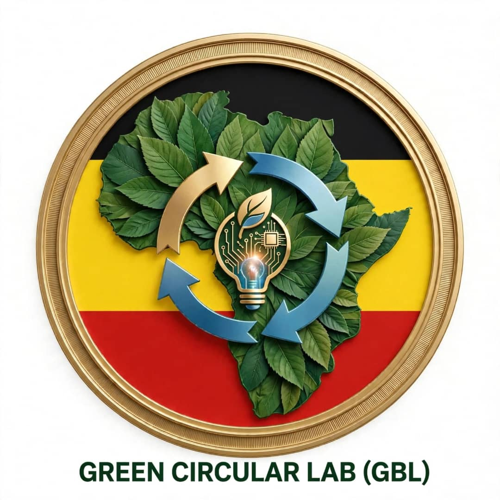

Innovating Today for a Greener and Better Tomorrow
Find answers about Green Circular Lab and how to get involved.
This page provides general information about Green Circular Lab, its mission, areas of interest and ways people can express interest in supporting its work.
Green Circular Lab is an organisation focused on promoting environmental sustainability, ICT, innovation, entrepreneurship and community empowerment.
GBL stands for Green Circular Lab.
GBL seeks a greener, smarter and more sustainable future through innovation, technology and entrepreneurship.
"Innovating Today for a Greener and Better Tomorrow."
GBL is based in Uganda. For enquiries, contact the organisation using the email address or telephone number on this website.
Environmental conservation, climate action, waste management, ICT and digital innovation, youth entrepreneurship, research and community development.
Environmental activities are among GBL's proposed programme areas. Official activities and dates will be announced when confirmed.
GBL aims to encourage youth participation in technology, environmental education, innovation and entrepreneurship. Specific opportunities depend on available programmes and resources.
GBL welcomes discussions about possible educational collaboration in environmental awareness, ICT and innovation.
Visit our Volunteer page and use the application email link to express your interest, skills and availability.
Students, educators, professionals, entrepreneurs and interested community members may express interest in volunteering.
No. Submitting an expression of interest does not guarantee placement. Opportunities depend on available programmes, resources and organisational capacity.
Interested institutions can visit the Partnerships page or contact GBL by email to discuss possible areas of collaboration.
Visit the Donate page and contact GBL for verified organisational payment instructions. Do not send money to unverified accounts.
GBL welcomes enquiries about possible contributions such as computers, educational materials, technical expertise and professional mentorship. Please contact us to discuss suitability.
GBL has a Financial Reports page intended to provide relevant financial information. Only verified and formally prepared financial reports should be presented as official records.
GBL has a website section for institutional policies. Visitors should check each document for its approval status. A proposed policy should not be treated as formally approved until the organisation completes its approval process.
You can contact GBL through its official email address. For concerns relating to integrity, refer to the Anti-Corruption Policy and follow its reporting guidance.
We welcome enquiries, ideas and opportunities for collaboration.
Email GBL Contact on WhatsApp Contact Page